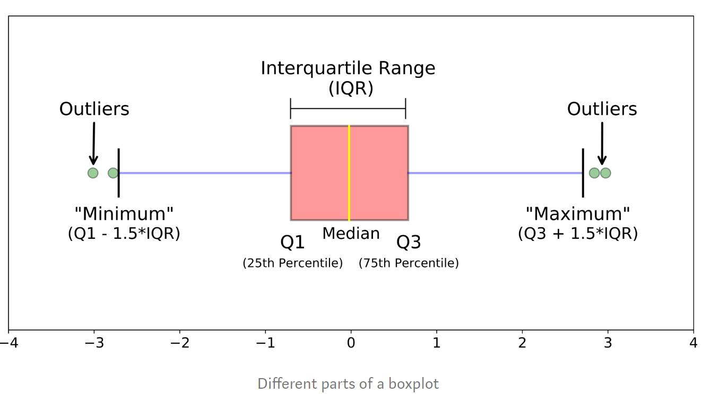
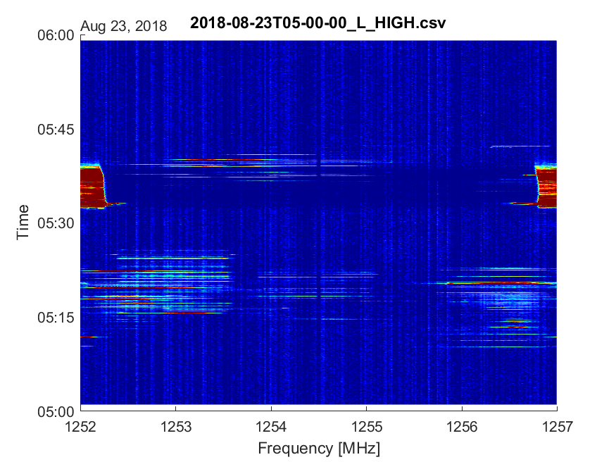
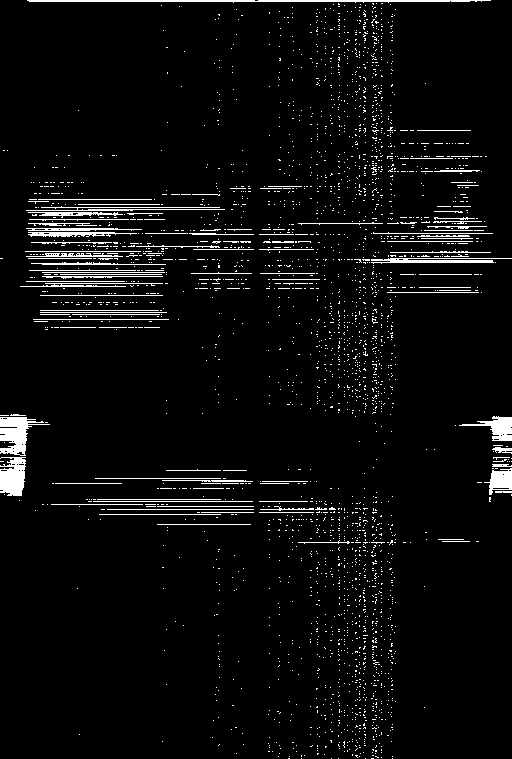
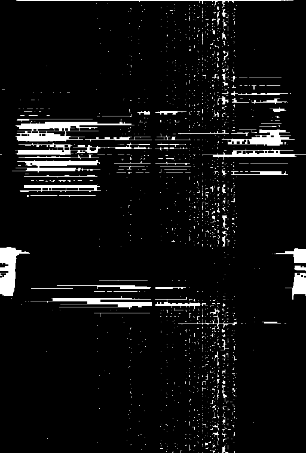

Signal identification
The purpose of signal identification is extracting the signals from spectrum and get their features for the next step like clustering or classification.
The workflow of signal identification can be divided in the steps below:
-
From raw data, create threshold for signal power by using anomalies detection methods.(for example box plot method).
From that threshold, create boolean matrix.
-
From boolean matrix, create black - white pictures. The white areas on picture represent signals and should be extracted to get features like duration, bandwidth, power, peaks number, max gradient.
-
Location of ISS at the time of receiving signals is also a good feature, it can be obtained from provided database from MarconISSta.
1. Box plot method explanation.
An outlier is an observation that is numerically distant from the rest of the data.
When reviewing a box plot, an outlier is defined as a data point that is located outside the whiskers of the box plot.
- Calculate parameters:
Median (Q2/50th Percentile): the middle value of the dataset.
First quartile (Q1/25th Percentile): the middle number between the smalles
number and the median of the dataset. Third quartile (Q3/75th Percentile):
the middle value between the median and the highest value of the
dataset.
Interquartile range (IQR): 25th to the 75th Percentile. (IQR = Q3 - Q1)
- Calculate bounds
Uper bound = Q3 + factor*IQR
Lower bound = Q1 - factor*IQR
The factor can be selected equal 1, 1.5, 2. The selection is up to user.
- The outliers are defined as the numbers outside the range between "lower
bound" and "upper bound"
Read more:
https://towardsdatascience.com/understanding-boxplots-5e2df7bcbd51
2. Extracting signals by using OpenCV
The surface plot picture of one csv file can be seen below
↓
From the threshold, a black - white picture was created. Note that the picture is reversed from surface plot picture.
↓
There are still noises on black - white picture. Closing and Opening method in OpenCV can be used to remove noises
Closing black - white picture
↓
opening black - white picture
3. Get features of each signal
Each white area on picture represents a signal.
-
Draw a minimum rectangle over this white area in order to get duration and bandwidth of the signal.
-
Signal power, peaks number and max gradient can be extracted from matrix in raw data.
-
Location feature can be obtained from tle - two line element set data from given database.